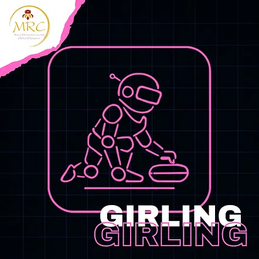
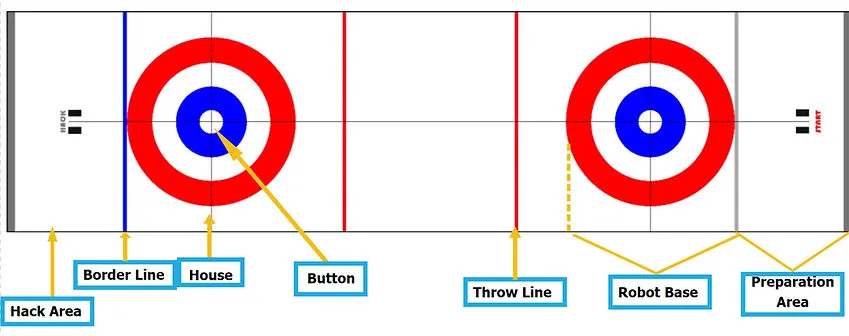
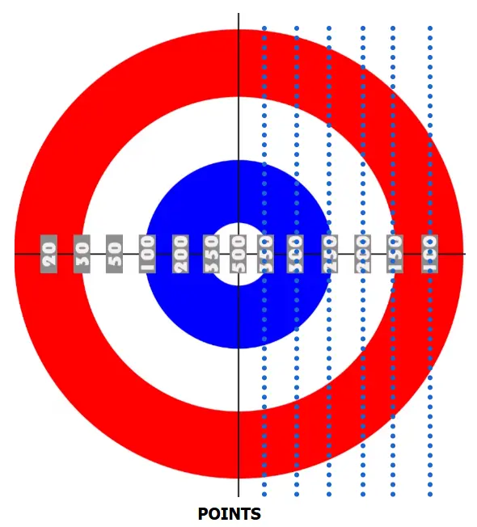
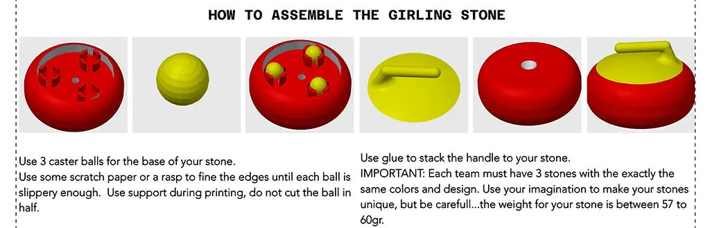

這是為您翻譯的繁體中文內容，所有 Markdown 格式、圖片與下載連結佔位符均已完整保留：
---
兒童組 (KIDS)：10 至 12 歲 / 國小學生
青少年 / 高級組 (TEENS / SENIOR)：12 歲以上至 18 歲 / 國中與高中生
⚠️ 本項目僅設有一個競賽級別：
所有機器人類型一同比拼。
🚨 各年齡組別分開進行比賽。
獨特的運動類別
僅限女性/女生參賽
⚠️ 零號規則 (RULE ZERO) – 零容忍與常識：
在所有體育運動中，幫適用零號規則，內容如下：
➤「如果您不確定某件事是否被允許，那它大概就是不被允許的。」
所有規則均基於常識、運動精神以及所有參賽者的安全。
任何故意曲解規則、違反規則本意，或試圖利用灰色地帶以獲取不公平優勢的行為，皆絕不姑息，並可能導致隊伍被取消比賽資格。
* 本運動項目的宗旨是模擬冰壺運動 (Curling)。
* 本項目僅供由女性/女生組成的隊伍參加。
* 可採個人形式參賽。
* 在此情況下，個人參賽者同時也是其機器人的唯一「機器人運動員技術員」。
* 參賽者必須年滿 10 歲（相當於國小四年級或以上）。
* 每位個人參賽者僅限擁有一台機器人。比賽期間不得更換機器人。
* 不得在不同的個人參賽者之間共用機器人。
* 若遭遇嚴重技術問題，參賽者可在獲得主裁判許可後，僅更換微控制器或電子元件。
👥 團隊參賽
* 可採團隊形式參賽。
* 每支隊伍可由二 (2) 至三 (3) 名成員組成。
* 所有隊友必須年滿 10 歲（相當於國小四年級或以上）。
* 每隊必須指定最多兩 (2) 名「機器人運動員技術員」。
* 僅有獲指定的技術員獲准進入比賽區域。
* 隊伍的其他成員可留在比賽場地內，但不得排隊（不得佔用額外位置）。➤ 換句話說，他們不得佔用額外的位置。若隊伍未遵守此規則，將被取消資格。
* 隊伍可在每次上場嘗試前更換指定的技術員，以讓所有成員都有機會積極參與，但此非強制性。
* 每支隊伍必須配備一名年滿 20 歲的教練。
* 為確保參賽順暢，教練每報名 3 支隊伍，就必須配備 1 名助理。
* 每支隊伍僅限擁有一台機器人。比賽期間不得更換機器人。
* 隊伍之間不得共用同一台機器人。
* 若隊伍的機器人遭遇嚴重技術問題，可在獲得主裁判許可後，僅更換微控制器或電子元件。
本賽事開放各種機器人套件或硬體組成的機器人運動員參賽。
所有機器人運動員將在各自的年齡組別中一同比拼。
1. 機器人運動員必須具備全自主運行能力（自動化）。
2. 其最大尺寸限制為：寬 40 公分 x 長 40 公分，高度不限，質量上限為 2 公斤。
3. 為確認規格，機器人運動員將進行稱重，且必須能緊密放入檢查箱中。
* 檢查箱尺寸為 40 x 40 公分，另加兩 (2) 公釐 (mm) 的公差。
4. 機器人運動員應能在不施加壓力的情況下放入檢查箱。
5. 機器人運動員不得損壞賽道，亦不得以任何方式對觀眾造成威脅。
6. 機器人運動員必須具備啟動與停止按鈕。
7. 機器人運動員應具備適合「推滑」冰壺石而非「拋擲」冰壺石的機構。
8. 機器人運動員可在其結構的任何部位使用橡皮筋或彈簧。
9. 嚴禁使用氣壓裝置/材料，或使用空氣、氣體、渦輪及相關機構。
10. 無論機器人類別為何，僅允許使用 1 個微處理器/核心、最多 6 個馬達及最多 4 個感測器。
11. 對於微處理器連接埠無法支援超過 4 個馬達的機器人套件類別，允許使用連接埠擴充元件（例如 Lego Mindstorms 多路復用器 / Multiplexer）。
🧪 技術檢查
1. 初步技術檢查將於比賽當天在主辦單位規定的地點和時間進行。
2. 在初步技術檢查期間，隊伍將被詢問有關機器人程式核心要點的問題。隊伍應攜帶已開啟機器人程式的筆記型電腦。若提問顯示隊伍對程式並不瞭解，則該隊將面臨懲罰，扣除其在該運動項目所得總分的 20%。
3. 技術檢查包括依據上述條件對機器人進行檢驗。若未達規格，將不被允許參賽，並自動取消賽事資格。
4. 若隊伍在初步檢驗期間未在現場，將導致該隊自動被取消比賽資格。
5. 每場比賽嘗試前，副裁判亦會進行二次技術檢查。
6. 技術檢查期間，將檢查每顆「冰壺石」的尺寸與重量。若「冰壺石」不符合規格，隊伍將無法參賽。（規格請見下一節）。
🏟️ 場地規範
* 比賽賽道尺寸為：長 5 公尺 x 寬 1.30 公尺。
* 賽道顏色為白色，材質為可印刷的防水帆布 (tarpaulin)。
* 賽道平鋪於地面上以達最佳平整度。
* 兩端均設有一個直徑為 1 公尺的目標區 /「大本營」(House)。
* 大本營由紅、白、藍三色同心圓組成。
* 大本營中心處的白色圓圈稱為「圓心」(Button)，直徑為 14 公分。
* 起始端（參見機器人基地）的第 2 個目標區 /「大本營」，其唯一目的是讓機器人運動員能對準主要目標區 /「大本營」。
* 「欄外區」(Hack area) 計為零分，若「冰壺石」進入該區域，將被視為超出比賽場域並由裁判回收。
* 冰壺石越靠近圓心 (Button)，得分越高；距離越遠，得分越低。分數是利用水平線的虛擬延伸線計算的，這些延伸線在賽道上不可見。（參見下方圖片中的虛線）。
* 投擲線 (Throwing line) 標示為粗紅色，機器人運動員在投擲過程中不得踩踏或跨越該線。
* 準備區 是競賽場域旁指定的一塊區域，隊伍可在每次嘗試前將機器人運動員放置於此進行準備。該區域僅限指定機器人技術員進入。在準備區內，隊伍可以：
➤ 將冰壺石安裝至機器人運動員上。
➤ 開啟電源並將機器人置於預備/待機狀態。
➤ 進行最終的機械或軟體調整（但不得將任何線材連接至電腦）。
➤ 準備完成且獲得裁判指示後，必須將機器人運動員從準備區移至「機器人基地」(Robot Base) 區域以開始嘗試。
* 為在賽事開始前測試機器人運動員，將設有指定時間段的測試輪，時程表將於比賽當天公布。
* 機器人運動員需投擲的冰壺石，為本運動項目花崗岩冰壺石的 3D 列印模擬/微縮版。「冰壺石」直徑為 79mm，高度為 36.44mm，重量介於 57g 至 60g 之間。
* 每支隊伍必須擁有 3 顆自行列印並帶至比賽現場的冰壺石（檔案可於此處下載：GIRLING STONE 3D），以便對機器人進行相應調校。
* 每顆「冰壺石」上都應有隊伍的識別標記。這可以是某種貼紙。
* 「冰壺石」的組裝說明如下所示。



* 針對 2026 年，可以使用金屬萬向輪球 (metal caster balls) 代替 3D 列印球。然而，冰壺石總重不得超過 60 克。請多加測試您 3D 列印冰壺石的內部填充密度 (infill)。
* 不得對冰壺石的外型設計進行任何修改，亦不得修改放置萬向輪球的槽位。
🏆 競賽流程
⏱️ 比賽準備
1. 將機器人運動員放置於準備區，技術員為其裝備「冰壺石」並將機器人設定為預備/待機狀態。
2. 其中一名技術員將機器人運動員放置於「機器人基地」(Robot Base) 區域內隊伍所選擇的位置。
3. 技術員等待裁判發出開始訊號。
🏁 開始與比賽進行
* 在裁判發出訊號且技術員按下「啟動-停止」按鈕後，機器人運動員必須立即啟動。若機器人運動員在按下啟動鈕後的 前 5 秒內 未能啟動，則該次啟動視為無效，且僅給予隊伍一次重新啟動的機會。
* 機器人運動員應移動至投擲線並在該處釋放「冰壺石」。機器人運動員在投擲過程中不得踩踏紅色的投擲線。
* 「冰壺石」必須一路推滑至「大本營」(House) 區域方可獲得分數。
* 若機器人運動員稍微越過投擲線，則該次嘗試計為 0 分。
* 若「冰壺石」越過藍線/邊界，則將其移出比賽。裁判負責將其移除。
* 本運動項目的目標是將其「冰壺石」推送至盡量靠近「圓心」(Button) 的位置以獲取高分。
🔁 回合與嘗試
🏁 競賽階段
* 比賽分為兩個階段進行：資格賽 (Qualifiers) 與 決賽 (Finals)。
🎯 資格賽階段
* 所有報名隊伍在場地上單獨進行比賽。
* 每支隊伍擁有 3 顆「冰壺石」，可進行 3 次獨立的嘗試。
* 嘗試採輪流循環制：所有隊伍皆完成其第一次嘗試後，再進行第二次嘗試，以此類推直至完成第三次嘗試。
* 在每次嘗試中，隊伍投擲其全部 3 顆冰壺石，分數將根據場地計分區計算。
* 三次嘗試中僅取最高分的一次，作為該隊最終的資格賽成績。
* 在所有隊伍完成嘗試後，將根據其最佳成績決定排名。
🏆 晉級決賽
* 資格賽成績前 5 名的高分隊伍晉級決賽。
* 若第 5 名出現同分情況，則比對各隊次佳（第二高）的成績。
🤝 決賽階段
* 晉級決賽的 5 支隊伍在同一個場地上共同比拼。
* 所有隊伍依序輪流投擲，每次投擲一顆冰壺石。在所有隊伍完成第一輪投擲後，開始第二輪投擲，隨後進行第三輪也是最後一輪投擲。
* 決賽的出場順序依據隊伍從資格賽晉級時的排名而定。
* 決賽期間，隊伍可以嘗試將對手的冰壺石撞離原有位置，這屬於比賽策略的一部分（與真實冰壺運動相同）。
* 每個隊伍在決賽中同樣擁有 3 顆「冰壺石」，最終排名由所有決賽隊伍完成全部三次投擲後的最終場上分數決定。
* 🚫 投擲過程中嚴禁踩踏或觸碰紅色的投擲線；否則該次投擲將視為無效。
📊 計分方式
* 在每個階段（資格賽或決賽）結束時，根據每顆冰壺石相對於場地計分區的位置給予分數。
* 計分僅採計所有投擲結束後冰壺石的最終停留位置。
❌ 嘗試結束之判定
* 當機器人運動員完成投擲時。
* 若機器人運動員遭遇技術故障問題。
* 若機器人運動員在嘗試期間將「冰壺石」推入欄外區 (HACK area)。
* 投擲過程中踩踏或觸碰紅色的投擲線（該次投擲作廢）。
* 若冰壺石完全停留在計分區域之外。
* 若冰壺石超出賽道邊界。
* 若機器人運動員的任何部分在投擲完成前跨出準備區外。
* 「比賽場地」章節中所描述的情形。
🚨 分數
分數標示於競賽場地上（參見上方圖片）。
🟥 隊伍取消資格
在下列情況下，隊伍將被取消賽事資格並必須退出比賽：➤ 隊伍成績將不予計算，亦不會出現在官方比賽排名中。
* 若機器人運動員不符合運動規則中規定的規格，且隊伍拒絕進行必要的調整。
* 若任何技術員行為不當、不尊重他人、使用攻擊性語言、挑釁，或在言語（或其他方面）攻擊其他參賽者或裁判。
* 若發現機器人運動員並非自主運行，而是透過藍牙、Wi-Fi 或任何類似技術進行遙控。
✅ 允許 / ❌ 禁止事項
✅ 允許事項：
* 比賽開始後延伸機器人運動員，但必須在機器人運動員到達投擲線之前完成，且整體不得越過投擲線。
* 僅能使用濕清潔布或清潔液配紙巾清潔機器人運動員的輪子。
* 使用彈性材料（橡皮筋、彈簧等）。
❌ 禁止事項：
* 機器人運動員使用可能傷害觀眾的零件。
* 使用黏著劑來增加抓地力。
* 改變冰壺石的設計，或改變放置萬向輪球的槽位。
* 比賽過程中將機器人運動員拆解成碎片。
* 遠端遙控/手動操控。
* 比賽期間與電腦或任何其他電子裝置進行無線連線（藍牙）。若發現隊伍（隊員或教練）在比賽期間以無線方式連接其機器人，將取消該項目的參賽資格。
* 機器人運動員技術檢查章節中所列出的限制事項。
🏆 獲獎者
各年齡組別獲得最高分數 前 3 名 為獲獎者。
最佳成績將用於決定以下名次：
🥇 冠軍 (第 1 名) 🥈 亞軍 (第 2 名) 🥉 季軍 (第 3 名)
若出現平手，則採計隊伍次佳（第二高）的成績，以此類推。